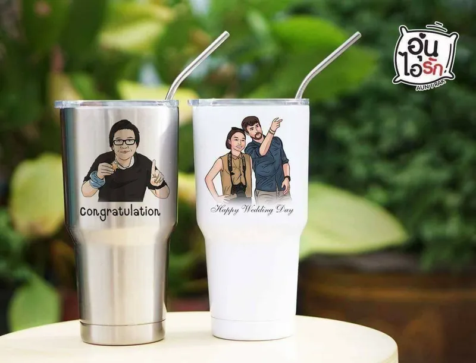
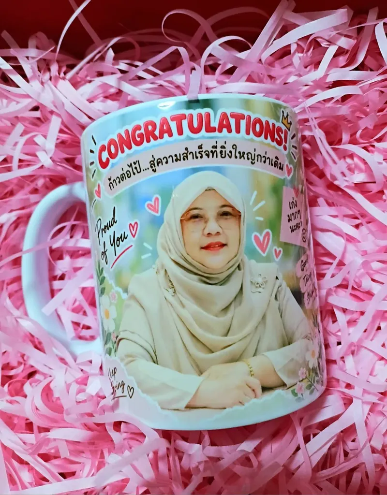

ของขวัญรับปริญญา 2026: 5 ไอเดียไม่ซ้ำใคร บัณฑิตได้แล้วประทับใจ
วันรับปริญญามีครั้งเดียวในชีวิต ของขวัญรับปริญญาที่ดีจึงไม่ควรเป็นของโหลที่ใครก็ให้เหมือนกัน ช่อดอกไม้สวยแค่วันเดียวแล้วก็เหี่ยว แต่ของขวัญสั่งทำจากรูปของบัณฑิตเองเก็บไว้ได้เป็นสิบปี บทความนี้รวม 5 ไอเดียที่ลูกค้าสั่งทำมากที่สุดช่วงฤดูรับปริญญา พร้อมคำอวยพรสำหรับเขียนการ์ดหรือสกรีนลงของขวัญค่ะ
1. หมอนไดคัทชุดครุย — บัณฑิตฉบับกอดได้

ไอเดียยอดฮิตอันดับหนึ่งของฤดูรับปริญญา ส่งรูปชุดครุยมา เราตัดเย็บเป็นหมอนไดคัทตามรูปทรงจริง ได้บัณฑิตเวอร์ชันย่อส่วนที่กอดได้ ตั้งโชว์ก็น่ารัก ถ่ายรูปคู่ในวันงานก็เก๋ไม่ซ้ำใคร ราคาเริ่ม 333 บาท สั่งใบเดียวก็ผลิตให้ และถ้าถ่ายรูปหมู่กับเพื่อนสนิท สั่งเป็นเซ็ตให้ครบแก๊งยิ่งประทับใจ
2. หมอนสกรีนรูปใบเซลฟี่สวย ๆ
เลือกรูปที่บัณฑิตชอบที่สุด เช่น รูปซ้อมใหญ่ รูปครอบครัว หรือรูปกับแฟน สกรีนลงหมอนอิงพร้อมชื่อ คณะ และปีที่จบ ใช้เป็นหมอนกอดจริงได้ทุกวัน มี 7 ขนาด เริ่ม 399 บาท ปลอกซิปถอดซักได้ เป็นของขวัญที่ทั้งซึ้งและใช้งานได้จริงในหอหรือบ้าน
3. แก้วเก็บความเย็นสกรีนรูป

สายเรียนต่อหรือ first jobber ต้องได้ใช้แน่นอน แก้วทัมเบลอร์ทรงสตาร์บัคหรือทรง Yeti สกรีนภาพวาดการ์ตูนของบัณฑิตพร้อมข้อความ "Congratulations" ราคา 690 บาท ฟรีหลอดสแตนเลส พกไปมหาลัยหรือออฟฟิศได้ทุกวัน เห็นแก้วทีไรก็นึกถึงวันรับปริญญา
4. แก้วมัค Congratulations — งบน้อยแต่ใจเต็มร้อย

งบไม่เยอะก็ให้ของขวัญประทับใจได้ แก้วมัคสกรีนรูปบัณฑิตพร้อมคำอวยพรราคาเพียง 200 บาท เหมาะมากเวลาทั้งกลุ่มเพื่อนอยากให้ของขวัญคนละชิ้น หรือรุ่นน้องรวมเงินให้รุ่นพี่ ออกแบบตกแต่งภาพให้ฟรี ส่งแบบให้ดูก่อนผลิตทุกใบ
5. กรอบรูปภาพวาดวันรับปริญญา
อยากได้ของที่ตั้งโชว์ในบ้านได้นาน ๆ ลองกรอบรูปภาพวาดการ์ตูน ให้นักวาดวาดบัณฑิตในชุดครุยพร้อมครอบครัวหรือแฟน ใส่พื้นหลังมหาวิทยาลัย ชื่อปริญญา และวันที่รับ เป็นชิ้นที่พ่อแม่มักภูมิใจตั้งไว้กลางบ้านที่สุด ส่งรูปมาประเมินราคาได้ฟรีทางไลน์
คำอวยพรรับปริญญา 10 แบบ — เขียนการ์ดหรือสกรีนลงของขวัญ
- ยินดีกับบัณฑิตใหม่ ขอให้ก้าวต่อไปสู่ความสำเร็จที่ยิ่งใหญ่กว่าเดิม
- ความพยายามทั้งหมดออกดอกออกผลแล้ว ภูมิใจในตัวเธอมากนะ
- จบไปอย่าลืมกัน ขอให้เส้นทางข้างหน้าสดใสเหมือนรอยยิ้มวันนี้
- ปริญญาใบนี้คือจุดเริ่มต้น ขอให้เก่งและเฮงยิ่ง ๆ ขึ้นไป
- Congratulations! ขอให้งานดี เงินปัง สุขภาพแข็งแรง
- เหนื่อยมาหลายปี วันนี้คือรางวัลของความตั้งใจ ยินดีด้วยนะ
- ขอให้ความรู้ที่ได้มา พาไปสู่ชีวิตที่ใฝ่ฝัน
- ภูมิใจในตัวลูกที่สุด ขอให้อนาคตสดใสดั่งใจหวัง
- จากเพื่อนที่เรียนด้วยกันมา — ยินดีที่สุด แล้วไปต่อด้วยกันนะ
- วันนี้ของเธอคือแรงบันดาลใจของใครอีกหลายคน ยินดีด้วยจริง ๆ
สรุป — เลือกของขวัญรับปริญญายังไงให้ว้าว
เคล็ดลับคือเลือกของที่ มีรูปของบัณฑิตเอง + ใช้งานได้ต่อ + มีข้อความจากใจ ดอกไม้ให้ความสวยวันเดียว แต่หมอนชุดครุยหรือแก้วสกรีนรูปอยู่กับเขาไปอีกหลายปี ร้านอุ่นไอรักออกแบบและผลิตเองทุกขั้นตอน ส่งแบบให้ดูก่อนผลิต เสร็จใน 3–4 วัน อย่าลืมสั่งล่วงหน้าก่อนวันซ้อมใหญ่หรือวันรับจริงอย่างน้อยหนึ่งสัปดาห์นะคะ
ส่งรูปชุดครุยมาทาง LINE ให้เราทำแบบให้ดูฟรี
บอกวันรับปริญญา เดี๋ยวทีมงานจัดคิวผลิตให้ทันแน่นอนค่ะ
แอด LINE @aunirakคำถามที่พบบ่อยเรื่องของขวัญรับปริญญา
ให้อะไรดีที่ไม่ซ้ำใคร
ของขวัญสั่งทำจากรูปของบัณฑิตเอง เช่น หมอนไดคัทชุดครุย หมอนสกรีนรูป หรือแก้วสกรีนพร้อมข้อความ เพราะมีชิ้นเดียวในโลกและเก็บเป็นที่ระลึกได้ค่ะ
ควรสั่งล่วงหน้ากี่วัน
อย่างน้อย 5–7 วันก่อนวันงาน (ผลิต 3–4 วันหลังยืนยันแบบ บวกจัดส่ง) งานด่วนทักไลน์มาคุยก่อนได้ค่ะ
ใช้รูปจากมือถือได้ไหม
ได้ค่ะ ส่งรูปชุดครุยที่ชัดที่สุดมาทางไลน์ เราตัดพื้นหลัง จัดไฟล์ และส่งแบบให้ดูก่อนผลิตทุกชิ้น
อ่านต่อ / สินค้าที่เกี่ยวข้อง
บทความ: ของขวัญแต่งงาน ซึ้งใจคู่บ่าวสาว
บทความ: ของขวัญวันเกษียณ + คำอวยพร 20 แบบ
บทความ: ของขวัญวันเกิด ไม่ซ้ำใคร
บทความ: ของขวัญปีใหม่ ให้ผู้ใหญ่ เจ้านาย จับฉลาก
บทความ: หมอนสกรีนโลโก้ ของพรีเมียมองค์กร
หมอนไดคัท เริ่ม 333.- · หมอนอิงสกรีนรูป เริ่ม 399.- · แก้วสกรีน เริ่ม 200.- · ผ้าห่มสกรีนรูป เริ่ม 690.- · กรอบรูปการ์ตูน